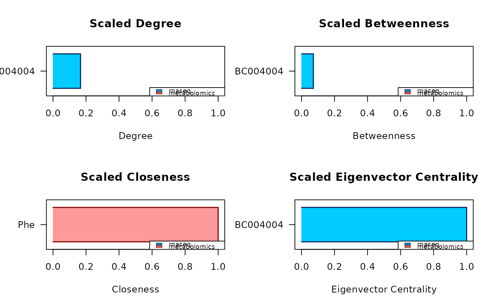
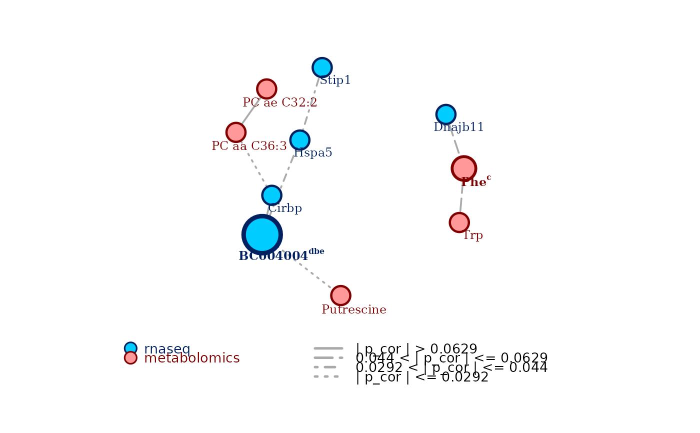

carmon.RdSingle wrapper function encompassing all the functional units of the carmon package: copula-based transition of non-normal data to the normal realm, network reconstruction and selection, consensus centrality analysis of the network to identify key omics features, and enriched plot of the network and of the analysis results.
carmon(
layers,
...,
p = NULL,
omics = NULL,
marginals = NULL,
noninv_method = NULL,
copula = NULL,
net_method = "coglasso",
sel_method = NULL,
cor_cutoff = NULL,
cor_quant = NULL,
minimal_output = FALSE,
analyse = TRUE,
c_measures = "dbce",
max_candidates_c_measures = NULL,
quantile_c_measures = NULL,
scaled_c_measures = TRUE,
plot = TRUE,
plot_node_labels = TRUE,
hide_isolated = TRUE,
plot_hot_nodes = TRUE,
verbose = 1
)The omics layers to analyze. Preferably provided as a named R
list of non-normalized omics data sets. If possible the names of
the list
should correspond to the respective omics type. If not possible, for
example because of two layers from the same technology, please provide the
omics types with the parameter omics. To see a list of available
omics types use the function which_omics().
Each data set should be source-matched (same amount of matched samples or
individuals across each data set). Placing of the samples (or individuals)
should also be consistent: either along the rows for all the data
sets, or along the columns for all the data sets, nothing in
between. All the samples (or individuals) should also have consistent
naming across the data sets.layers can also be a single unified data set, but then it is necessary to
specify the argument p.
Necessary only in case layers is a single data set.
A vector with with the number of variables for each omic layer of the
data set (e.g. the number of transcripts, metabolites etc.), in the same
order the layers have in the data set. If the sum of the elements in p
is less than the real number of features in the data set, carmon()
assumes that there is an omics layer more, with as many features as the
real number of features minus sum(p).
Highly recommended. A character vector of as many elements as
the number of omics layers, naming which omics types each layer contains,
in the same order as provided in the input layers
(e.g. omics = c('RNA-seq', 'proteomics', 'metabolomics')). To
see a list of terms and omics technologies for which carmon is
specifically tailored, use the function which_omics().
Optional, to be specified when the user prefers to use
different marginal distributions than the default distribution carmon
tailored for each omics layers. A vector of as many elements as the number
of layers, specifying which marginal distribution should be used for each
omics layer, in the same order as provided in the input layers. To see a
list of available marginal distributions, use the function
which_marginals(). For a mixed custom setting, place a 0 in the vector
in the position corresponding to the omics layers for which the default
distribution is desired. Otherwise, specify the desired marginal
distribution (e.g. marginals = c(0, 'lognormal', 0) means
'default, lognormal, default').
A placeholder for future functionalities of carmon, do not use.
A placeholder for future functionalities of carmon, do not use.
The network reconstruction method to use. The four methods
currently available are: 'coglasso' for
collaborative graphical lasso,
'glasso' for graphical lasso, 'mb' for the Meinshausen-Buhlmann
neighborhood selection, and 'correlation' for a thresholded Pearson's
correlation network. The default method is 'coglasso'. See References for
more information on the network reconstruction methods.
The network selection method. Each reconstruction procedure has its own set of model selection procedures available. See References for more information on the network selection methods. Here is the list of them:
for net_method = 'coglasso': 'xstars' for eXtended StARS,
'xestars' for eXtended Efficient StARS, and 'ebic' for Extended
Bayesian Information Criterion. Default is 'xestars'.
for net_method = 'glasso': 'stars' for StARS, 'ric' for
Rotational Information Criterion, and 'ebic' for Extended Bayesian
Information Criterion. Default is 'stars'.
for net_method = 'mb' or 'correlation': 'stars' for StARS,
and 'ric' for Rotational Information Criterion. Default is 'stars'.
The additional optional arguments to be given for the network
reconstruction and selection procedure. The available arguments depend on
the chosen network reconstruction and network selection methods. If using
'coglasso' (default option), see coglasso::bs() for both reconstruction
and selection arguments. If reconstructing with 'glasso', 'mb', or
'correlation' without setting cor_cutoff or cor_quant see,
respectively, huge::huge.glasso(), huge::huge.mb(), or
huge::huge.ct(). For additional options for network selection from these
last three reconstruction methods, see huge::huge.select().
Optional for net_method = 'correlation'. The cutoff
value for the absolute Pearson's correlation network. Any edge with an
absolute correlation below the cutoff is excluded from the final network.
Not used by default, as the cutoff is generated by internal calculations.
Optional for net_method = 'correlation', to set as an
alternative to cor_cutoff. Determine the cutoff of correlation based on
the top percentile indicated by the user. For example, cor_quant = 0.2
would set as a correlation cutoff the 20th percentile of the absolute
Pearson's correlation values, ordered from highest to lowest. Not used by
default, as the cutoff is generated by internal calculations.
Logical. Set to TRUE to get only a minimal output
from
the network reconstruction and selection module of carmon(), which mainly
differs on the basis of on the network reconstruction method set with
net_method. Defaults to FALSE.
Logical. Whether to perform the consensus centrality analysis
to identify key omics features. The highlighted features are important
based on a consensus of multiple centrality measures. Defaults to TRUE.
A string of characters, each one representing one of four
possible centrality measures implemented in the consensus centrality
analysis: 'd' stands for degree centrality, 'b' for betweenness
centrality, 'c' for closeness centrality, and 'e' for eigenvector
centrality. Default is 'dbce': all the four measures.
What is the highest amount of nodes that can
be highlighted by each measure of centrality, before finding the
consensus? Default is 20. When given together with the
quantile_c_measures
argument, it overrides the quantile_c_measures argument when
max_candidates_c_measures is smaller than the chosen quantile, it is
overrode by quantile_c_measures in the opposite case.
What is the top percentile of nodes that can be
highlighted by each measure of centrality, before finding the
consensus? Default is the top 5%. When given together with the
max_candidates_c_measures, it overrides the max_candidates_c_measures
argument when the amount of nodes in the chosen top percentile is smaller
than the chosen maximum amount of candidate nodes, it is overrode by
max_candidates_c_measures in the opposite case.
Logical. Whether to compute centrality measures as
0-1 scaled values. Defaults to TRUE.
Logical. Whether to plot the multi-omics network (enriched by the
results of the centrality analysis when that is performed), and the results
of the centrality analysis (when performed). Defaults to TRUE.
Show node names in the plot of the network. Defaults
to TRUE.
Hide from the plot nodes that are not connected to any
other node. Defaults to TRUE.
Highlight in the plot nodes that are selected as
consensus-central nodes by the node centrality analysis, by drawing them
bigger and adding the criteria for which they result to be central. The
larger the consensus, the bigger the nodes are plotted. Defaults to TRUE.
The level of verbosity of the carmon() process. 0
suppresses the information output, while 1 and 2 give progressively
increasing amounts of information about the inner computations happening
inside the package's modules. Defaults to 1
carmon() returns an object of S3 class carmon. The elements of
this object depend on the chosen network reconstruction ('coglasso', by
default) and selection ('xestars', by default) strategies, and on whether
or not the consensus centrality analysis is carried out (yes, by default).
Every possible running mode of carmon() produces a carmon object
with the following elements:
layers is an R list, each element being a data set of the
corresponding omics layer, already copulized and transferred to the
normal realm.
omics is a vector containing the omics type assigned to each omics
layer.
marginals is a vector containing the marginal distributions used to
transfer each omics layer to the normal realm.
sel_adj is the adjacency matrix of the final selected carmon
network.
net_method is the chosen network reconstruction method.
sel_method is the chosen model selection method.
network is the igraph network object of the final selected
carmon network.
call is the matched call.
Depending on the different network reconstruction and selection strategies
chosen, some of the other elements may change. When choosing 'coglasso' or
'glasso' as network reconstruction method, an additional returned element
is:
sel_icov is the inverse covariance matrix of the final selected
network.
Otherwise, if choosing 'correlation', carmon() also returns:
cor is the Pearson's correlation matrix of the final selected
network.
When minimal_output is set to TRUE, these are also the only elements
returned in the object of S3 class carmon given by carmon(). For
the non minimal output elements resulting from network reconstruction and
selection, please look at coglasso::bs() for net_method = 'coglasso'.
When using 'glasso', 'mb', and when using 'correlation' without setting
any value for cor_cutoff or cor_quant, look at huge::huge() and at
huge::huge.select().
Moreover, when analyse = TRUE (default behaviour), the carmon object
contains two additional elements resulting from the consensus centrality
analysis:
report an R data frame. The rows correspond to the nodes identified
to be central by the analysis, and they are ordered based on how large is
the consensus among the different measures. The data frame has 6
columns:
candidate, the name of the central node;
degree, the degree centrality of the node;
betweenness, the betweenness centrality of the node;
closeness, the closeness centrality of the node;
eigenvector, the eigenvector centrality of the node; and
central for, the a string reporting the first letter of all the
measures according to which the node is central for.
measures_list an R named list of as many elements as the number of
chosen centrality measures, the name of each element being the associated
centrality measure. Each element is a named numerical vector, containing
the measures of the top central nodes identified in the analysis. The
name of each element of the vectors is the name of the node associated to
the reported measure.
For collaborative graphical lasso and eXtended StARS, see Albanese et al. (2024)
For graphical lasso, see Friedman et al. (2007)
For neighborhood selection, see Meinshausen and Buhlmann (2006)
For the StARS selection procedure, see Liu et al. (2010)
# Suggested usage: provide input data as a named R list, each element being
# the data set of an omics layer, then let carmon do the rest. See the
# vignettes for a more custom usage!
data(multi_omics_small)
c_obj <- carmon(multi_omics_small, verbose = FALSE)

